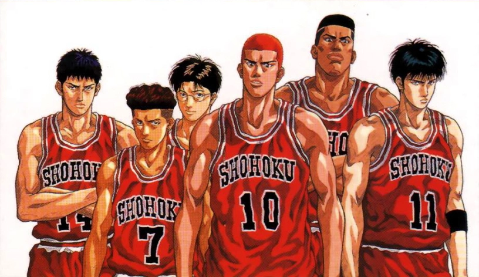

Acerca de la serie
Slam Dunk (スラム ダンク Suramu Danku?) es un manga Shonen del género Spokon escrito e ilustrado por Takehiko Inoue. La trama sigue a Hanamichi Sakuragi, un estudiante de secundaria que decide practicar baloncesto para conquistar a Haruko Akagi, la chica de que está enamorado.
El manga fue publicado en la revista Weekly Shōnen Jump de 1990 a 1996 y sus capítulos fueron recopilados en 31 volúmenes tankōbon por Shūeisha y, más tarde, en 24 tomos con formato kanzenban. Fue adaptado en una serie de anime por Toei Animation entre 1993 y 1996, aunque la trama de sus 101 capítulos solo abarca hasta el volumen 22 del manga. Slam Dunk ha vendido más de 120 millones de copias en Japón,1 lo que la convierte en una de las series de manga más vendidas de la historia.
Más tarde, el autor utilizó el baloncesto como tema central en otros dos títulos de manga: Buzzer Beater y Real. En 2010, Inoue recibió elogios especiales de la Asociación de Baloncesto de Japón por ayudar a popularizar el deporte en el país.